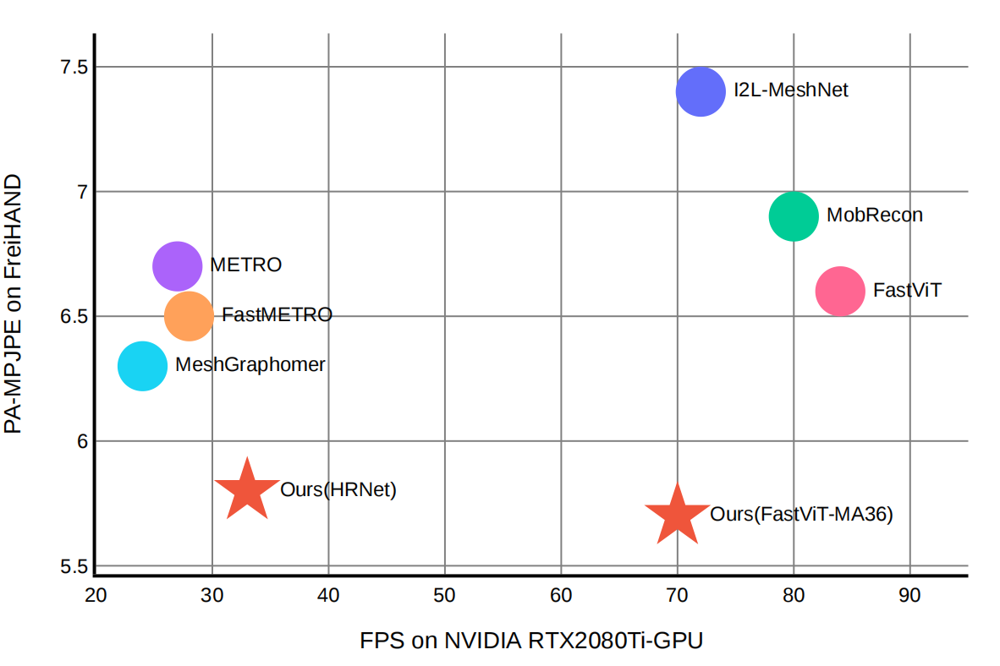

A Simple Baseline for Efficient Hand Mesh Reconstruction (CVPR 2024)
Zhishan Zhou*,
Shihao Zhou*,
Zhi Lv,
Minqiang Zou,
Yao Tang
and Jiajun Liang✝
* Equally Contribution. ✝ Corresponding Author.
JIIOV Technology
[Paper]
[Github]
[BibTeX]

JIIOV Technology is a leading biometric recognition solutions provider. We are now working on Extended Reality (XR) hand interaction algorithm and modules.
We transplanted simpleHand design into realworld device to make a practically test. It shows advantages especially in finger interaction senario, while retains realtime efficiency. See here for full example videos. We will provide more videos comparing our method with Quest and AVP.
Methodology
We propose simnpleHand, a simple yet effective baseline that not only surpasses state-of-the-art (SOTA) methods but also demonstrates computational efficiency. SimpleHand can be easily transplant to mainstream backbones and datasets.
SimpleHand consists a backbone and a mesh decoder, while mesh decoder is abstracted into a token generator and a mesh regressor.
From functional perspective, Token generator samples representative tokens using predicted 2d keypoints. Mesh regressor cascadely lifts the sampled tokens into meshes. We proposed a concept of "CORE STRUCTURE", which is the minimum structure that meets these functions.

Results and Comparisons
SimpleHand found the component with the greatest performance gain and implemented them using the simplest structure. Therefore, it has good performance in both efficiency and accuracy.

Comparison to existing work

SimpleHand capitalizes on the strengths of existing methodologies, thereby outperforming them in numerous challenging scenarios.This is particularly evident in intricate finger interactions, like pinching or twisting, as well as in complex and unconventional gestures.

About us
Founded in February 2020, JIIOV Technology is a consumer electronics provider specializing in fingerprint solutions, smart components and innovative sensor technology. Within one year of our establishment, our products had been successfully applied in leading smartphone companies devices. We owe this achievement to our employees commitment to our core value of "pioneering innovation"
Our mission
Creating a brand new interactive experience with AI and sensors, enable the world to accelerate into a fully intelligent era.
Our vision
Creating an era of safe, user-friendly, convenient and smart interaction.
Through the ongoing efforts of all JIIOV employees, we confidently provide you with better, smarter products and experiences.
— Chen Keqing
Project page template is borrowed from DreamBooth.